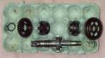
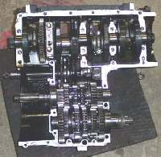

The bike will not change out of one gear: the lever will not move, moves without doing anything, or moves but the gear stays the same. You may not be able to find neutral to stop. Sometimes the dogs inside are simply jammed against each other and free up when the bike is rocked. Other causes are a lever slipping on its shaft, a broken clutch cable (so the clutch never releases), or a broken fork or guide pin inside the gearbox.
Is it safe to ride?
No. You cannot stop without stalling or pull away safely. Move the bike off the road. If the clutch still works, you can push it with the clutch lever pulled; if not, transport it.
Quick checks first
- Is the clutch cable intact, and does the lever have normal feel?
- Is the gear lever still tight on its shaft?
- Was the bike dropped, or did the chain come off?
Diagnose it step by step
1Engine off, clutch lever pulled. Rock the bike backwards and forwards while pressing the gear lever gently. Does it change?
- Yes: the dogs were jammed face to face. It should now work normally; if it happens again, go to Gears are hard to select.
- No: go to step 2.
2Does the clutch lever have normal resistance, and does the clutch release?
- No, the lever is floppy: Clutch lever has no resistance or the cable has snapped.
- Yes: go to step 3.
3Does the gear lever move freely without changing anything?
- Yes: the lever is slipping on its shaft or the linkage is disconnected. Refit or replace the gear lever, Check the gear lever and shift linkage.
- No: go to step 4.
4Does the lever move one way but not come back?
- Yes: see Gear lever does not spring back.
- No, it is solid both ways: go to step 5.
5Is the lever or linkage blocked by something outside (bent against the case, a stone, a dropped chain behind the sprocket cover)?
- Yes: clear it. If the chain wrapped round the front sprocket, see Chain has snapped.
- No: the jam is inside the gearbox: a broken or bent fork, a broken fork guide pin, or broken gear parts. Go to Assess internal gearbox faults.
Do not force it. Kicking or levering the gear lever hard can bend the shift spindle and forks, which turns a small repair into a large one.
Causes, most likely first
| Cause | How to confirm | Fix |
|---|---|---|
| Dogs jammed face to face | Frees when the bike is rocked | No repair needed |
| Clutch not releasing (broken cable) | Floppy clutch lever | Replace the clutch cable |
| Lever slipping or linkage disconnected | Lever moves, gear does not | Refit or replace the gear lever |
| Lever blocked outside the engine | Visible obstruction | Clear it; Check the gear lever and shift linkage |
| Broken fork, guide pin or gear | Solid lever, nothing outside | Assess internal gearbox faults |